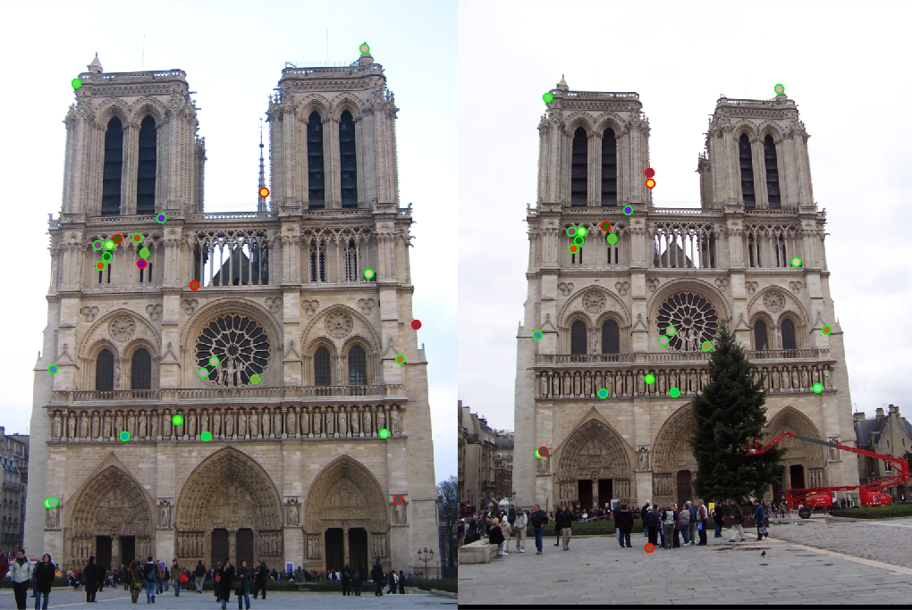

CS 4495 / 6476 Project 2: Local Feature Matching
The top 100 most confident local feature matches from a baseline implementation. In this case, 93 were correct (highlighted in green) and 7 were incorrect (highlighted in red)
In this project, I tried to implement a local feature matcher which is able to detect local features in two images. These two images are taken of a same physical scene but from different views, also under different illumination. A qualified and robust feature matcher can always find their correspondence accurately.
There are actually several different algorithms of local feature matching. In this project, I choose a simplified version of the famous SIFT pipeline. To make it easier to be implemented, I break down the project into three steps:
- Interest point detection: Find interest points in each image
- Local feature description: Compute a descriptor vector for each interest point
- Feature matching: Find correspondence between features of two images
Step 1: Interest point detection
Interest points detection is also called key points detection. Having a small window in a given image is pre-requisite of detection. If shifting the window in any direction gives a large change in terms of intensity, then there is a high change that the window contains a key point.
I implemented the Harris Corner Detector as described in the lecture and the textbook (Szeliski 4.1.1).
- Compute the x and y gradients of the image by convolving it with a derivative of Gaussian (variance = 1), named them 'ix' and 'iy'
- Compute ix_x = ix.*ix, iy_y = iy.*iy, ix_y = ix.*iy (elements in the second moment matrix)
- Convolve each of the three images above with a larger Gaussian (variance = 2), call them g(ix_x), g(iy_y), g(ix_y)
- Compute the cornerness function given by g(ix_x)g(iy_y) - g(ix_y)^2- alpha*(g(ix_x) + g(iy_y))^2
- Execute non-maxima suppression
Corresponding Matlab Code:
alpha = 0.04;
gaussian = fspecial('Gaussian', [25, 25], 1);
[gx, gy] = imgradientxy(gaussian);
ix = imfilter(image, gx);
iy = imfilter(image, gy);
% Process gradients near edges
ix([(1: feature_width) end - feature_width + (1: feature_width)], :) = 0;
ix(:, [(1: feature_width) end - feature_width + (1: feature_width)]) = 0;
iy([(1: feature_width) end - feature_width + (1: feature_width)], :) = 0;
iy(:, [(1: feature_width) end - feature_width + (1: feature_width)]) = 0;
large_gaussian = fspecial('Gaussian', [25, 25], 2);
ix_x = imfilter(ix.*ix, large_gaussian);
ix_y = imfilter(ix.*iy, large_gaussian);
iy_y = imfilter(iy.*iy, large_gaussian);
har = (ix_x .* iy_y) - (ix_y .* ix_y) - alpha .* (ix_x+iy_y).*(ix_x+iy_y);
The non-maxima suppresion is critical for the accuracy of interesting point detection. Firstly, I tried to use a window to slide across the image and keep track on the maxima in each window. Then, I also implemented a threshold cornerness function which is able to keep only the local maxima that is above the threshold in each connected components.
Using connected components is much faster than sliding window in Matlab (about ten times faster), and the result is quite similar. More importantly, sliding window is more susceptible to the edges than connected components.
Corresponding Matlab Code:
switch sliding
case 1
har = har .* threshold;
har_max = colfilt(har, [feature_width feature_width], 'sliding', @max);
har = har .* (har == har_max);
[y, x] = find(har > 0);
confidence = har(har > 0);
case 0
components = bwconncomp(threshold);
width = components.ImageSize(1);
x = zeros(components.NumObjects, 1);
y = zeros(components.NumObjects, 1);
confidence = zeros(components.NumObjects, 1);
for j = 1: (components.NumObjects)
pixel_ids = components.PixelIdxList{j};
pixel_values = har(pixel_ids);
[max_value, max_id] = max(pixel_values);
x(j) = floor(pixel_ids(max_id) / width);
y(j) = mod(pixel_ids(max_id), width);
confidence(j) = max_value;
end
end
| Sliding window | Connected components |
|---|---|
Step 2: Local Feature Description
The SIFT pipeline is used for building local feature descriptors.
- Get a frame of size feature_width * feature_width surrounding each key point
- Divide each frame into 16 cells
- Compute the gradient histogram for each cell by 8 bins
- The resulting descriptor is 128 dimensions (16*8 = 128). It is formed by concatenating the gradient histograms of the 16 cells.
Corresponding Matlab Code:
features = zeros(size(x,1), 128);
small_gaussian = fspecial('Gaussian', [feature_width feature_width], 1);
large_gaussian = fspecial('Gaussian', [feature_width feature_width], feature_width / 2);
[gx, gy] = imgradientxy(small_gaussian);
ix = imfilter(image, gx);
iy = imfilter(image, gy);
get_octant = @(x, y) (ceil(atan2(y, x) / (pi / 4)) + 4);
orients = arrayfun(get_octant, ix, iy);
mag = hypot(ix, iy);
c_size = feature_width / 4;
num_points = size(x, 1);
for i = 1: num_points
frame_x_range = (x(i) - 2*c_size): (x(i) + 2*c_size-1);
frame_y_range = (y(i) - 2*c_size): (y(i) + 2*c_size-1);
frame_mag = mag(frame_y_range, frame_x_range);
frame_mag = frame_mag .* large_gaussian;
frame_orients = orients(frame_y_range, frame_x_range);
%iterating each little cell in frame
for x_x = 0: 3
for y_y = 0: 3
cell_orients = frame_orients(x_x*4+1: x_x*4+4, y_y*4+1: y_y*4+4);
cell_mag = frame_mag(x_x*4+1: x_x*4+4, y_y*4+1: y_y*4+4);
for j = 1: 8
f = cell_orients == j;
features(i, (x_x*32 + y_y*8) + j) = sum(sum(cell_mag(f)));
end
end
end
end
features = diag(1 ./ sum(features, 2)) * features;
end
Question here:
Is there any data structure could simplified this 4 layers nested 'for' loop? It is a little bit painfully slow in Matlab.
| Feature frames | |
Step 3: Feature Matching
According the textbook 4.1.3, the feature matching can be implemented by using distance ratio matching.
- Compute the distance matrix between the set of key points of the two images
- Sort the distance matrix by row
- Take the rows that has the ratio of the nearest neighbor and the second nearest neighbor below a certain threshold
Outputs of my Matlab code:
| 1, Notre Dame: 21 good matches, 6 bad matches (Accuracy = 78%) |
|  |
 |
| 2, Mount Rushmore: 31 good matches, 6 bad matches (Accuracy = 83%) |
| 3, Sleeping Beauty: |
| 4, Pantheon Paris: |
| 5, Sacre Coeur: |
Result Review and Analysis
- For interest points finding, using threshold and then find local maxima of connected components is much faster than using a sliding window. The results are relatively identical
- Since we are using a fixed frame size (feature_width), choosing two images of similar sizes would provide much better results. However, we can also try to detect keypoints at multiple scales, and build the features at the corresponding scales.
- Since the frame size is only 16x16, the variance of the gaussian used to compute horizontal and vertical gradients shouldn't be too big. When the variance is growing bigger, the accuracy of result could be lower.